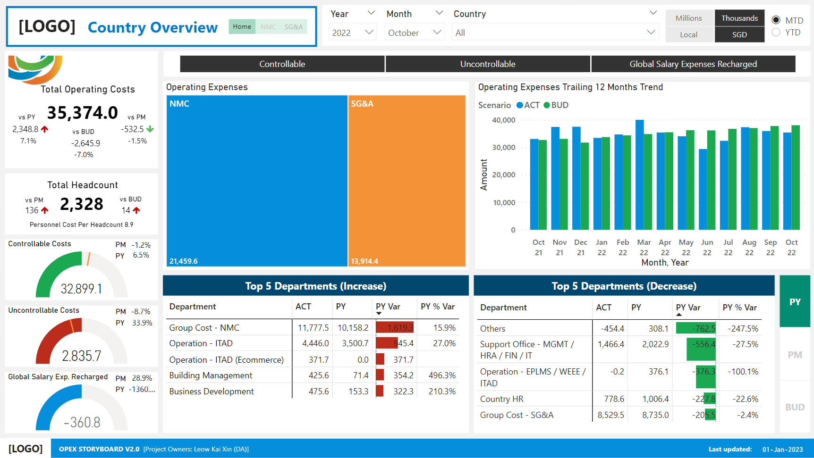
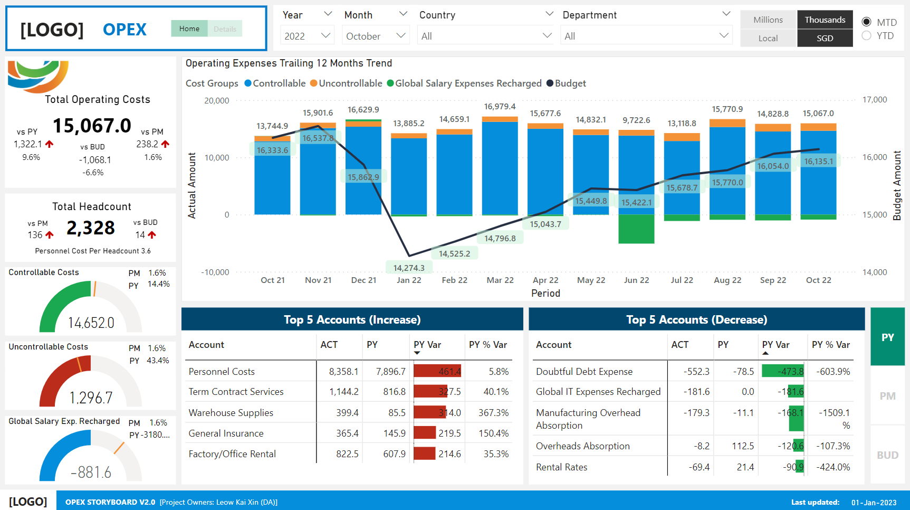

Operation Expenses Details
The Operation Expenses (OPEX) Storyboard is an extension of the P&L Storyboard NMC and SG&A pages. It provides additional visibility on the organisations' operating expenses throughtout its various departments in its global network.
The first dashboard is the "Overview" Dashboard.

The second dashboard is the "Overview" Dashboard.
The third dashboard is the "Overview" Dashboard.
